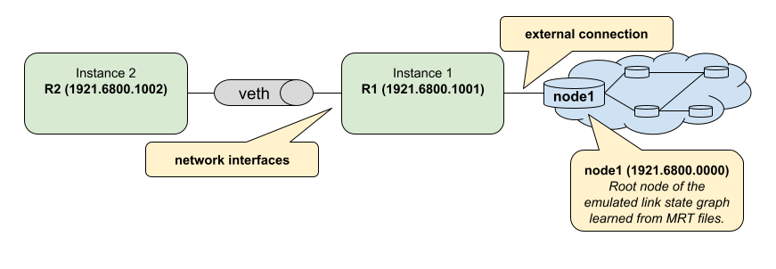

Quickstart Guide
In this guide, we’ll walk you through the BNG Blaster basics. All the examples here work standalone without having network devices.
First, you need to install the BNG Blaster on your machine.
In the next step, you create a virtual ethernet interface pair. This can be used by the BNG Blaster to send and received traffic.
sudo ip link add veth1.1 type veth peer name veth1.2
sudo ip link set veth1.1 up
sudo ip link set veth1.2 up
PPPoE
Let’s start with a simple PPPoE setup where BNG Blaster emulates the client and server. On the first interface we use an A10NSP interface. Those interfaces emulate a lightweight PPPoE server by accepting every session. The other interface is configured as PPPoE client.

The configured session traffic generates bidirectional traffic between client and server. There is also one more traffic stream bound to the sessions.
pppoe.json:
{
"interfaces": {
"a10nsp": [
{
"__comment__": "PPPoE Server",
"interface": "veth1.1"
}
],
"access": [
{
"__comment__": "PPPoE",
"interface": "veth1.2",
"type": "pppoe",
"outer-vlan-min": 1,
"outer-vlan-max": 4000,
"inner-vlan": 7,
"stream-group-id": 1
}
]
},
"pppoe": {
"reconnect": true
},
"dhcpv6": {
"enable": false
},
"session-traffic": {
"ipv4-pps": 1
},
"streams": [
{
"stream-group-id": 1,
"name": "S1",
"type": "ipv4",
"direction": "both",
"priority": 128,
"length": 256,
"pps": 1,
"a10nsp-interface": "veth1.1"
}
]
}
Now you can start the BNG Blaster with this configuration.
$ sudo bngblaster -C pppoe.json
Mar 30 14:27:59.303904 Resolve network interfaces
Mar 30 14:27:59.303952 All network interfaces resolved
Mar 30 14:27:59.396765 ALL SESSIONS ESTABLISHED
After pressing ctrl+c, the test should be stopped and a detailed
report printed.
Let’s advance the test by enabling some features explained below.
$ sudo bngblaster -C pppoe.json -c 1 -L test.log -l ip -J report.json -j sessions -j streams -P test.pcap -S run.sock -I
-C test.jsonloads the configuration file-c 1defines how many sessions to be emulated, you can increase the number to see what happens…-L test.logcreates an optional logging file-l ipenables the IP address logging-J report.jsongenerates a final JSON report at the end-j sessionsinclude detailed results for every session in the JSON report-j streamsinclude detailed results for every stream in the JSON report-P test.pcapgenerates a PCAP file-S run.sockopens the JSON RPC API socket-Istart interactive courses user interface

Now let’s try to press F1 to navigate through the different views. All supported
keyboard inputs are listed in the top left corner. After pressing F9 the test
should be stopped.
If the test is still running, you can open a second terminal. Then go to the same directory from where you started the BNG Blaster and enter the following command.
$ sudo bngblaster-cli run.sock session-info session-id 1 | jq .
{
"status": "ok",
"code": 200,
"session-info": {
"type": "pppoe",
"session-id": 1,
"session-state": "Established",
"interface": "veth1.2",
"outer-vlan": 1,
"inner-vlan": 7,
"mac": "02:00:00:00:00:01",
"username": "user1@rtbrick.com",
"reply-message": "BNG-Blaster-A10NSP",
"lcp-state": "Opened",
"ipcp-state": "Opened",
"ip6cp-state": "Opened",
"ipv4-address": "10.10.10.10",
"ipv4-dns1": "10.12.12.10",
"ipv4-dns2": "10.13.13.10",
"dhcpv6-state": "Init",
"tx-packets": 87,
"rx-packets": 80,
"rx-fragmented-packets": 0,
"session-traffic": {
"total-flows": 2,
"verified-flows": 1,
"first-seq-rx-access-ipv4": 1,
"first-seq-rx-access-ipv6": 0,
"first-seq-rx-access-ipv6pd": 0,
"first-seq-rx-network-ipv4": 1,
"first-seq-rx-network-ipv6": 0,
"first-seq-rx-network-ipv6pd": 0,
"access-tx-session-packets": 34,
"access-rx-session-packets": 34,
"access-rx-session-packets-loss": 0,
"network-tx-session-packets": 34,
"network-rx-session-packets": 34,
"network-rx-session-packets-loss": 0,
"access-tx-session-packets-ipv6": 0,
"access-rx-session-packets-ipv6": 0,
"access-rx-session-packets-ipv6-loss": 0,
"network-tx-session-packets-ipv6": 0,
"network-rx-session-packets-ipv6": 0,
"network-rx-session-packets-ipv6-loss": 0,
"access-tx-session-packets-ipv6pd": 0,
"access-rx-session-packets-ipv6pd": 0,
"access-rx-session-packets-ipv6pd-loss": 0,
"network-tx-session-packets-ipv6pd": 0,
"network-rx-session-packets-ipv6pd": 0,
"network-rx-session-packets-ipv6pd-loss": 0
},
"a10nsp": {
"interface": "veth1.1",
"s-vlan": 1,
"qinq-send": false,
"qinq-received": false,
"tx-packets": 46,
"rx-packets": 87
}
}
}
You can also try other commands to get familiar with the API.
After the test has stopped, you can also check the final JSON report (jq . report.json),
log, and PCAP files.
ISIS
In the following example, we create two ISIS nodes (R1 and R2) with an emulated ISIS topology attached to R1 (test.mrt`).
isis.json:
{
"interfaces": {
"network": [
{
"interface": "veth1.1",
"address": "10.0.0.1/24",
"gateway": "10.0.0.2",
"address-ipv6": "fc66:1337:7331::1/64",
"gateway-ipv6": "fc66:1337:7331::2",
"isis-instance-id": 1,
"isis-level": 1
},
{
"interface": "veth1.2",
"address": "10.0.0.2/24",
"gateway": "10.0.0.1",
"address-ipv6": "fc66:1337:7331::2/64",
"gateway-ipv6": "fc66:1337:7331::1",
"isis-instance-id": 2,
"isis-level": 1
}
]
},
"isis": [
{
"instance-id": 1,
"area": [
"49.0001/24",
"49.0002/24"
],
"system-id": "1921.6800.1001",
"router-id": "192.168.1.1",
"hostname": "R1",
"sr-base": 1000,
"sr-range": 100,
"sr-node-sid": 1,
"level1-auth-key": "secret123",
"level1-auth-type": "md5",
"external": {
"mrt-file": "test.mrt",
"connections": [
{
"system-id": "1921.6800.0000.00",
"l1-metric": 1000,
"l2-metric": 2000
}
]
}
},
{
"instance-id": 2,
"area": [
"49.0001/24",
"49.0002/24"
],
"system-id": "1921.6800.1002",
"router-id": "192.168.1.2",
"hostname": "R2",
"sr-base": 1000,
"sr-range": 100,
"sr-node-sid": 2,
"level1-auth-key": "secret123",
"level1-auth-type": "md5"
}
],
"streams": [
{
"name": "RAW1",
"type": "ipv4",
"direction": "downstream",
"priority": 128,
"destination-ipv4-address": "192.168.1.2",
"length": 256,
"pps": 1,
"network-interface": "veth1.1"
}
]
}
Now use the included tool lspgen to generate the attached ISIS topology.
$ lspgen -a 49.0001/24 -K secret123 -T md5 -C 1921.6800.1001 -m test.mrt
Mar 30 14:54:19.647569 Add context for instance default, protocol isis, topology unicast
Mar 30 14:54:19.647630 Add connector to 0x192168001001
Mar 30 14:54:19.647633 LSP generation parameters
Mar 30 14:54:19.647639 Area 49.0001/24
Mar 30 14:54:19.647642 Level 1, sequence 0x1, lsp-lifetime 65535
Mar 30 14:54:19.647645 Authentication-key secret123, Authentication-type md5
Mar 30 14:54:19.647648 IPv4 Node Base Prefix 192.168.0.0/32
Mar 30 14:54:19.647651 IPv4 Link Base Prefix 172.16.0.0/31
Mar 30 14:54:19.647654 IPv4 External Base Prefix 10.0.0.0/28
Mar 30 14:54:19.647657 IPv6 Node Base Prefix fc00::c0a8:0/128
Mar 30 14:54:19.647660 IPv6 Link Base Prefix fc00::ac10:0/127
Mar 30 14:54:19.647669 IPv6 External Base Prefix fc00::a00:0/124
Mar 30 14:54:19.647672 SRGB base 10000, range 2000
Mar 30 14:54:19.647678 Generating a graph of 10 nodes and 20 links
Mar 30 14:54:19.647813 Root node 1921.6800.0000.00
Finally, you can start the BNG Blaster.
$ sudo bngblaster -C veth1-isis.json -l isis -P test.pcap -S run.sock
Mar 30 14:56:11.981279 Init IS-IS instance 1
Mar 30 14:56:11.981314 Load ISIS MRT file test.mrt
Mar 30 14:56:11.981335 Init IS-IS instance 2
Mar 30 14:56:12.031917 Add network interface veth1.1 to IS-IS instance 1
Mar 30 14:56:12.087877 Add network interface veth1.2 to IS-IS instance 2
Mar 30 14:56:12.087971 opened pcap-file test.pcap
Mar 30 14:56:12.088013 Opened control socket run.sock
Mar 30 14:56:13.088035 Resolve network interfaces
Mar 30 14:56:13.088050 All network interfaces resolved
Mar 30 14:56:22.093906 ISIS L1 adjacency UP on interface veth1.2
Mar 30 14:56:22.093964 ISIS L1 adjacency UP on interface veth1.1
If the test is still running, you can open a second terminal, go to the same directory from where you started the BNG Blaster and enter the following command.
$ sudo bngblaster-cli run.sock isis-adjacencies
{
"status": "ok",
"code": 200,
"isis-adjacencies": [
{
"interface": "veth1.1",
"type": "P2P",
"level": "L1",
"instance-id": 1,
"adjacency-state": "Up",
"peer": {
"system-id": "1921.6800.1002"
}
},
{
"interface": "veth1.2",
"type": "P2P",
"level": "L1",
"instance-id": 2,
"adjacency-state": "Up",
"peer": {
"system-id": "1921.6800.1001"
}
}
]
}
You can also try other commands to get familiar with the API.